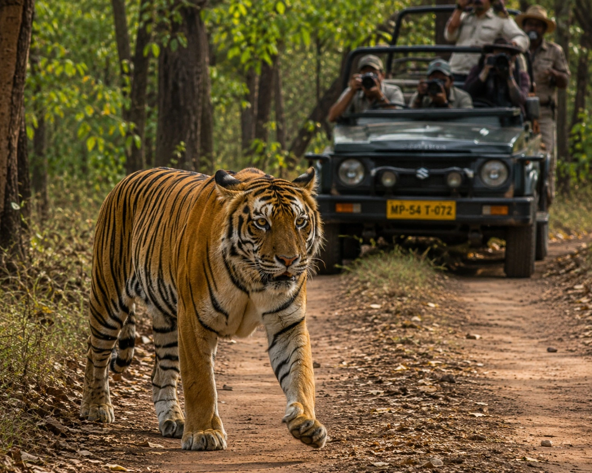

Home / Royal Bengal Tiger India Guide
Ecology, Conservation & Complete Safari Guide
The Royal Bengal Tiger (Panthera tigris tigris) — its scientific classification, genetic history, the NTCA's official census methodology, the four landscapes it calls home in India, and how to plan a safari to see one yourself.
| Royal Bengal Tiger — Quick Reference | |
|---|---|
| Scientific Name | Panthera tigris tigris |
| Population in India (2022 NTCA Census) | 3,682 (range 3,167–3,925) |
| Share of World's Wild Tigers | ~75% |
| IUCN Red List Status | Endangered |
| Range Countries | India, Bangladesh, Nepal, Bhutan |
| Tiger Reserves in India | 53+ (Project Tiger network) |
| National Animal of India Since | 1973 |
| Reserve With Highest Tiger Count | Jim Corbett National Park (~260) |
1. Evolutionary Origins & Genetic Bottlenecks
The Royal Bengal Tiger is not merely India's national animal — it is the keystone species holding the structural integrity of the subcontinent's ecological web together. Its scientific name, Panthera tigris tigris, marks it as the nominate subspecies of tiger. It was adopted as India's national animal in 1973, replacing the lion, to coincide with the launch of Project Tiger. Harbouring roughly 75% of the global wild tiger population, India is the species' final, most vital stronghold — a fact that also explains why the country's own conservation policy decisions carry outsized weight for the survival of wild tigers globally, not just domestically.
Paleontological evidence and mitochondrial DNA sequencing indicate the modern tiger evolved in East Asia, with ancestors of Panthera tigris tigris migrating into the Indian subcontinent roughly 12,000 to 16,000 years ago during the late Pleistocene. This relatively recent colonization explains the tiger's comparatively poor heat tolerance next to native Indian species like the leopard or Asiatic lion.
Genetic studies place the Bengal tiger's closest living relative as the Malayan and Indochinese tiger lineages, with all continental tiger populations sharing a common ancestor that diverged from the Sunda Island tigers (Sumatran) considerably earlier, likely coinciding with sea-level changes that isolated Sumatra from the Asian mainland. Within India itself, researchers have identified at least four genetically distinguishable regional clusters — broadly corresponding to the Terai Arc, Central Indian, Western Ghats, and Sundarbans populations described in the habitat section below — a level of internal structure that surprised early genetic surveys and now directly informs which populations conservationists prioritise for corridor-linking projects.
Geneticists today focus heavily on genetic bottlenecks. Habitat fragmentation leaves isolated populations — in Ranthambore or Simlipal, for instance — at risk of inbreeding depression. The Wildlife Institute of India (WII) actively maps wild genomes to track heterozygosity, and conservationists prioritise terrestrial corridors like the Kanha-Pench corridor to keep genetic exchange flowing between metapopulations. Simlipal's population in Odisha is a frequently cited cautionary case: decades of isolation have produced a documented cluster of pseudo-melanistic ("black") tigers, a visually striking but genetically concerning sign of a small, closed breeding population — a natural experiment in exactly the risk corridor projects are designed to prevent elsewhere.
2. The Biophysics of an Apex Predator
The Bengal tiger's physiology is built for explosive kinetic energy rather than stamina — an ambush predator's anatomy engineered to deliver immediate, lethal force to large ungulates like Sambar deer and Gaur (Indian Bison). Unlike pursuit predators such as the cheetah, which trade power for sustained speed, the tiger's entire biomechanical profile — dense muscle mass, a flexible spine, and a hunting strategy built around stealth over distance rather than a prolonged chase — reflects a fundamentally different evolutionary solution to the same problem: converting a large, wary prey animal into a meal.

Bite Force Quotient (BFQ) and Cranial Morphology
A pronounced sagittal crest anchors massive temporalis muscles, giving the Bengal tiger a Bite Force Quotient of approximately 127 (around 1,050 PSI). Its canines, dense with nerve endings, act as sensory organs — allowing the tiger to feel exactly where to slip a tooth between the cervical vertebrae of its prey to sever the spinal cord instantly. For context, this is roughly 6-10 times a human bite (120-160 PSI), and notably higher than its larger Siberian cousin (950-1,000 PSI) — a reminder that raw bite strength correlates more closely with skull architecture and muscle leverage than with overall body mass. Among land predators generally, only the jaguar's bite (roughly 1,500 PSI, driven by an unusually thick, rounded skull adapted for crushing turtle shells and crocodilian armour) clearly exceeds the tiger's.
Olfactory Communication and the Flehmen Response
In dense, low-visibility terrain, chemical communication outranks visual cues. Tigers rely on the Flehmen response — curling back the upper lip to expose the vomeronasal (Jacobson's) organ — effectively "tasting" the air to decode the reproductive status of females or the territorial claims of rival males from scent marks left days earlier. This same organ lets a solitary animal maintain an entire social structure without ever needing to physically meet most of its neighbours: a tiger patrolling its territory reads urine and gland-secretion marks left on trees and rocks the way a person might scan a noticeboard, gathering who's nearby, how recently, and what state they're in, all without direct contact that could otherwise mean costly conflict.
| Anatomical Adaptation | Ecological Function |
|---|---|
| Tapetum Lucidum | Retroreflector tissue behind the retina, boosting night vision roughly 600% relative to humans. |
| Vibrissae (Whiskers) | Highly innervated sensory hairs detecting minute air-pressure shifts, aiding bite placement in total darkness. |
| Digitigrade Locomotion | Walking on toes only, distributing a 250 kg mass with near-silent footfall on dry leaf litter. |
| Disruptive Coloration | Eumelanin stripes break up the tiger's outline against tall grasses and vertical forest flora. |
These adaptations don't operate independently — they form a single integrated hunting system refined over roughly two million years of felid evolution. A tiger's approach typically combines all four: silent digitigrade movement to close distance, whisker-guided spatial awareness to navigate obstacles without looking down, disruptive coloration to stay visually unresolved against foliage until the final metres, and enhanced night vision to hunt effectively well after most competing predators have bedded down. The result is a success rate that, while still low in absolute terms (roughly 1 successful hunt in every 10-20 attempts), is high relative to what raw strength or speed alone could achieve.
3. Is a "Royal Bengal Tiger" a Different Tiger? A Plain-English Answer
If you've landed here from outside India, this question is worth answering directly before anything else: yes and no. "Royal Bengal Tiger" and "Bengal Tiger" refer to the exact same animal — Panthera tigris tigris — the "Royal" is a traditional, honorific prefix used mainly in India and Bangladesh, not a separate classification. It is, however, genuinely different from a generic "tiger" in the sense that "tiger" is really an umbrella term covering six living subspecies (Bengal, Siberian, Sumatran, Indochinese, Malayan, and South China), each adapted to a different part of Asia. When most people picture "a tiger" — the vivid orange coat, bold black stripes, seen in an Indian nature documentary — they're almost always picturing the Bengal subspecies specifically, since it's both the most numerous and the most extensively photographed and filmed of the six.
So to be precise: every Royal Bengal Tiger is a tiger, but not every tiger is a Royal Bengal Tiger. If your safari, zoo visit, or documentary was set in India, Bangladesh, Nepal, or Bhutan, you were looking at this specific subspecies.
For scale, the Bengal subspecies alone accounts for well over half of all wild tigers left on Earth across all six subspecies combined — meaning most people's mental image of "a wild tiger," whether they realise the subspecies distinction or not, is statistically almost certainly a Royal Bengal Tiger. The other five living subspecies (Siberian, Sumatran, Indochinese, Malayan, and South China) collectively number in the low thousands and occupy geographically distant, non-overlapping ranges from Russia's Far East to the islands of Indonesia — none of which a typical India-based safari could ever encounter.
4. Landscape Ecology: The Four Primary Tiger Habitats
India's biodiversity gives the Bengal tiger four highly distinct ecological niches — essential reading for both researchers and travellers choosing a safari destination.

Beyond India's borders, the same subspecies extends into three neighbouring countries: Bangladesh (the Sundarbans, shared with West Bengal), Nepal (the Terai lowlands, including Chitwan and Bardia National Parks), and Bhutan (small, high-altitude populations in the country's southern foothills, among the only tigers on Earth documented above 4,000 metres). India, however, holds the overwhelming majority of the subspecies — which is why virtually every serious wild Bengal tiger sighting itinerary, for Indian and international travellers alike, is built around Indian reserves.
5. Modern Population Dynamics & SECR Census Methodology
In 2006, India abandoned the unscientific "pugmark tracking" census method — a technique that had been in use for decades but was later found to produce wildly inconsistent results depending on the individual forest guard doing the tracking, soil conditions, and even how many times a single tiger's prints were double-counted across overlapping patrol routes. Today the NTCA, with the WII, runs the largest biodiversity survey in the world using the Spatially Explicit Capture-Recapture (SECR) model: the country is divided into grids, over 30,000 motion-sensor camera traps deployed, and AI software called CaTRAT identifies individual tigers from their unique stripe patterns. Forest guards simultaneously log geospatial sighting, scat, and prey data via the M-STrIPES app.
The switch mattered enormously for public trust in the numbers: pugmark-era counts were criticised for years as politically convenient rather than scientifically rigorous, since a state government under pressure to show "progress" had every incentive to round generously. Camera-trap identification, by contrast, produces an auditable photographic record for every counted individual — which is part of why the post-2006 figures are treated as a genuine baseline rather than merely the continuation of an older trend line.
How Many Royal Bengal Tigers Are There in India? (Direct Answer)
India's official 2022 tiger census recorded 3,682 tigers (a statistical range of 3,167 to 3,925), making the country home to approximately 75% of the entire world's wild tiger population — by a wide margin, the largest wild tiger population of any nation on Earth. This figure comes from the National Tiger Conservation Authority (NTCA) and Wildlife Institute of India's joint "Status of Tigers" report, released to mark 50 years of Project Tiger, and represents a 6.1% annual growth rate over the previous 2018 count of 2,967.
A common follow-up question is the year-wise tiger population — 2021, 2022, or 2024 figures. The NTCA runs a comprehensive official census only once every four years, so here is the authentic cycle data:
| Census Year | Official Population | Remarks |
|---|---|---|
| 2014 | 2,226 | A 30% jump from the 2010 census (1,706 tigers). |
| 2018 | 2,967 | India doubled tiger numbers 4 years ahead of its St. Petersburg declaration target. |
| 2022 | 3,682 | Revised up from an initial 3,167 in the final comprehensive report. |
| 2026 | Census Active | The next all-India 4-year cycle estimation is currently underway. |
Tiger Population by Indian State
Population isn't evenly spread — a handful of states hold the overwhelming majority of India's wild tigers:
| State | Approx. Tiger Count (2022) |
|---|---|
| Madhya Pradesh | 785 |
| Karnataka | 563 |
| Uttarakhand | 560 |
| Maharashtra | 444 |
By individual reserve rather than state, Jim Corbett National Park in Uttarakhand holds the highest tiger count of any single reserve in the country — approximately 260 tigers — which is a large part of why it remains the most consistently recommended first destination for a wild tiger safari.
6. Royal Bengal Tiger IUCN Status & Legal Protection
The Royal Bengal Tiger, alongside the tiger species as a whole (Panthera tigris), is classified as Endangered on the IUCN Red List — one tier below "Critically Endangered" and two tiers above "Extinct in the Wild." This status reflects both the severity of the historical decline (a roughly 95% drop in global tiger numbers since 1900) and the encouraging fact that, unlike several other endangered megafauna, the trend for this specific subspecies is currently pointed upward rather than downward.
Legally, the species carries the highest possible protection under Indian law: it's listed on Schedule I of the Wildlife Protection Act, 1972, which criminalises hunting, trade, and possession of tiger parts with penalties of up to seven years' imprisonment. Internationally, it's listed under CITES Appendix I, banning commercial trade in the species or its derivatives across borders entirely. India's tiger reserves are additionally protected under the National Tiger Conservation Authority's statutory framework, established in 2006, which gives core zones legal status independent of state forest department discretion — a safeguard introduced specifically after the Sariska local-extinction crisis exposed how easily political and administrative pressure could otherwise erode protection.
Enforcement runs through a dedicated body, the Wildlife Crime Control Bureau, working alongside state forest departments and, for cross-border trafficking cases, international bodies like INTERPOL's wildlife crime unit. Special Tiger Protection Forces — armed, dedicated units separate from general forest guard staff — now patrol the highest-risk reserves specifically, a direct institutional response to the recognition that general forestry staff alone couldn't provide adequate protection against organised poaching networks.
7. Why Is the Royal Bengal Tiger Endangered?
Three interlinked pressures explain the species' Endangered status, and understanding them also explains why the recovery has been possible:
| Period | Estimated India Population | Primary Driver |
|---|---|---|
| ~1900 | ~40,000 | Pre-organised hunting baseline |
| Early 1970s | ~1,800 | Unregulated trophy hunting, habitat clearing |
| 2006 | ~1,411 | Post-independence low point; pugmark census era |
| 2022 | 3,682 | Sustained recovery under Project Tiger/NTCA |
- Historical hunting: Colonial-era trophy hunting and unregulated shooting through the early-to-mid 20th century did the overwhelming majority of the damage, collapsing India's tiger population from an estimated 40,000 in 1900 to roughly 1,800 by the early 1970s — the crisis that directly triggered Project Tiger's creation in 1973. Maharajas and British officials alike treated tiger shooting as a prestige sport well into the century, with some individual hunters credited (or blamed) for several hundred kills across a lifetime.
- Habitat fragmentation: Agricultural expansion, road and rail infrastructure, and human settlement have cut India's forest cover into disconnected islands, isolating tiger populations from each other and constraining the large, contiguous territory a healthy breeding population needs. A single adult male's territory can exceed 100 sq km — a requirement that shrinking, fragmented forest patches increasingly struggle to accommodate without forcing tigers into conflict with neighbouring humans.
- Poaching for the illegal wildlife trade: Despite tightened enforcement, demand for tiger bone, skin, and other parts — driven largely by traditional medicine markets in parts of East Asia — remains an active threat; India recorded 115 tiger deaths in 2024, though this was a 37% improvement on 2023's figures.
What's changed since the 1970s is a genuinely coordinated national response: legally protected core zones, an economic incentive structure that makes a living tiger worth more to nearby communities than a dead one through tourism revenue, and — as covered above — camera-trap-based monitoring precise enough to track individual animals rather than rough estimates. It's this combination, not any single fix, that's allowed India's tiger population to more than double since 2006.
8. Royal Bengal Tiger vs Siberian Tiger: Key Differences
One of the most searched comparisons among wildlife enthusiasts is the Royal Bengal Tiger vs Siberian (Amur) Tiger. While both are subspecies of Panthera tigris, they've adapted to opposite ends of the climate spectrum:
| Trait | Royal Bengal Tiger | Siberian (Amur) Tiger |
|---|---|---|
| Habitat | Tropical & subtropical forest, mangrove, grassland | Cold taiga and boreal forest (Russian Far East) |
| Average Weight (Male) | ~220 kg | ~230–260 kg, occasionally heavier |
| Coat | Vivid orange with dense, dark stripes | Paler, rustier coat with thicker winter fur |
| Wild Population | ~3,682 (India, 2022 census) | ~500–600 (Russia & China combined) |
| Primary Threat | Habitat fragmentation, human-wildlife conflict | Poaching, extremely low population density |
In short: the Siberian tiger is typically the heavier of the two subspecies and carries a thicker coat for sub-zero winters, while the Royal Bengal Tiger is more numerous, more vividly marked, and adapted to India's heat and monsoon cycle. The two subspecies never overlap in the wild — their ranges are separated by thousands of kilometres of unsuitable habitat across China and Central Asia — so the comparison is purely academic rather than a real ecological rivalry. Interestingly, bite force research suggests the Bengal actually edges out the larger Siberian on raw PSI, since jaw leverage and skull architecture matter more than overall body mass; it's territory and prey size, not fighting ability, that mainly separates the two subspecies' evolutionary paths.
9. Human-Wildlife Conflict (HWC) & Conservation Economics
The primary modern threat to the Bengal tiger is no longer organised hunting but extreme habitat fragmentation and Human-Wildlife Conflict. As populations rebound, tigers spill from protected core zones into agricultural buffers, leading to livestock loss and, occasionally, human casualties. This is, in a strange way, a symptom of success: as tiger numbers grow within a fixed area of protected habitat, young dispersing males in particular are forced to search for territory well beyond reserve boundaries, often through farmland and villages that didn't previously factor tiger presence into daily life. Compensation schemes for livestock loss, rapid-response capture teams for tigers that repeatedly enter settled areas, and community-level early-warning systems have all become standard tools precisely because they address this specific, structural cause rather than treating each incident in isolation.
To help local communities see the tiger as an asset rather than a liability, India has leaned into Tiger-nomics: high-end eco-tourism generates massive revenue, and a portion of national park gate receipts is reinvested into village development — training locals as safari naturalists and reducing dependency on forest resources.
10. Cultural & National Significance of the Royal Bengal Tiger
The tiger's role in India extends well beyond ecology. It has been India's National Animal since 1973 — replacing the lion, which held the title from 1960 — chosen specifically for its historically wide range across the subcontinent and its position as the apex predator anchoring a healthy forest ecosystem. In Hindu iconography, the tiger appears as the mount (vahana) of the goddess Durga, symbolising fearlessness and the triumph of good over evil, imagery still common in temple carvings and festival art today. In Bengali folklore of the Sundarbans specifically, the tiger deity Dakshin Rai is revered and feared in equal measure by the honey-collectors and fishermen who share the mangrove forest with it.
That same cultural reverence extends across much of Asia — the tiger is one of the twelve animals of the Chinese zodiac, associated with courage, and appears throughout East Asian folklore as a guardian figure. Ironically, this widespread symbolic value is also part of the modern threat: demand for tiger parts in traditional medicine markets across parts of East Asia remains one of the drivers behind the illegal wildlife trade discussed above — a striking case of the same reverence that elevates an animal culturally also, historically, endangering it materially.
11. Best Time to Visit & Top Reserves for a Tiger Sighting
The best month to see a Royal Bengal Tiger in India depends on what you're optimising for — raw sighting odds, or comfort. Here's the honest month-by-month picture:
The Top Reserves for Maximum Sighting Probability
Because off-roading is strictly prohibited in Indian Tiger Reserves, a fast full-frame body paired with a 100-400mm or 200-600mm telephoto lens and a wide aperture (f/2.8–f/4) is the ideal safari photography setup, since tiger movement often peaks during dawn and dusk. Reserve choice matters as much as gear, though — a photographer visiting Ranthambore's open, lake-adjacent zones will come home with very different results than one visiting the Sundarbans' dense mangrove cover, where sightings are rarer but the environment itself is the more unusual subject.

- Tadoba Andhari Tiger Reserve (Maharashtra): The "Jewel of Vidarbha" — dry, teak-dominated forest where extreme summer heat pushes tigers to man-made saucers and lakes, guaranteeing high-frequency sightings. Increasingly popular precisely because it remains less internationally known than Ranthambore or Corbett, meaning lower vehicle density per sighting even in peak season.
- Bandhavgarh National Park (Madhya Pradesh): Historically the hunting ground of the Maharajas of Rewa, with one of the highest tiger densities per sq. km of any reserve in the country. Tala and Magdhi zones are globally renowned for photography, and the reserve's compact size means safari vehicles cover proportionally more of the core territory per shift than at larger parks.
- Ranthambore National Park (Rajasthan): The quintessential Indian wildlife landscape — tigers photographed walking past 10th-century ruins and banyan trees, with Zone 3's lake offering an iconic backdrop.
- Kanha National Park (Madhya Pradesh): The sal-and-bamboo forest that inspired Rudyard Kipling's The Jungle Book, and the reserve credited with saving the barasingha (swamp deer) from extinction alongside its tiger conservation work.
- Sundarbans National Park (West Bengal): The only place to encounter the mangrove-adapted ecotype described in the habitat section above — boat-based rather than jeep-based, considerably rarer sightings, but a genuinely unique ecosystem found nowhere else tigers live.
- Corbett Tiger Reserve (Uttarakhand): India's oldest national park and the reserve with the highest tiger count of any single reserve. The Dhikala zone offers a raw sub-Himalayan aesthetic; see our complete Jim Corbett Safari Booking Guide for zone-by-zone detail and live 2026-27 pricing.
12. Planning a Royal Bengal Tiger Safari: A Guide for International Visitors
If you're travelling from outside India specifically to see a Royal Bengal Tiger, a few practical questions come up more often than any wildlife fact:
- Do I need a visa? Almost all foreign nationals need an Indian e-Visa or tourist visa arranged before arrival — apply at least a few weeks ahead of travel through India's official e-Visa portal.
- Which airport should I fly into? Delhi (DEL) is the standard international gateway for tiger reserves in the north (Corbett, Ranthambore) and centre (Bandhavgarh, Kanha, Tadoba) of the country; each reserve is then a domestic flight or private road transfer away — typically 5-7 hours by car from Delhi to Corbett, for example.
- What will it cost, in familiar currency? A private Jeep safari package (permit, vehicle, guide) typically runs USD 70-120 per person per day depending on reserve and season, before accommodation — luxury resort stays add USD 150-300+ per night on top of that.
- How many reserves should I visit? For a first trip, one well-chosen reserve with 2-3 safari shifts gives far better odds than spreading a short trip across multiple parks — sighting probability comes from repeated shifts in a good zone, not from visiting more places.
- Is it safe? Yes — safaris are conducted in permit-controlled vehicles with a licensed guide and driver at all times; visitors do not leave the vehicle inside core tiger zones, which is standard practice precisely because it keeps both wildlife and people safe. Serious tiger-related incidents involving tourists inside a moving safari vehicle are exceptionally rare; the far more common safety consideration for international visitors is standard travel precautions — road conditions on rural approach routes, sun exposure during peak-heat safaris, and staying hydrated across long dawn-to-dusk travel days, not the tigers themselves.
Combine this practical guide with our Jim Corbett booking page for live pricing and availability, or our complete Jim Corbett National Park guide for park-specific detail.
Combining a Tiger Safari With the Rest of an India Trip
For most international visitors, a tiger safari is one stop within a longer India itinerary rather than a standalone trip, and reserve choice should follow from that. Jim Corbett is the natural fit for travellers combining wildlife with the Golden Triangle (Delhi–Agra–Jaipur), since it's reachable without a major detour from that route. Ranthambore, in Rajasthan, sits directly within the Golden Triangle circuit itself, making it the easiest single addition to a first-time India trip. Central Indian reserves like Bandhavgarh and Kanha require a more deliberate detour but reward it with typically higher sighting density, and suit travellers building a dedicated wildlife-focused itinerary rather than bolting safari onto a cultural trip.
Whichever reserve you choose, book both permits and accommodation several weeks ahead if your dates fall in the November-February peak season — Forest Department vehicle quotas are strict and don't flex for demand, and well-known resorts near popular gates sell out well before the safari permits themselves become the constraint.
Wild Sighting vs. Zoo Sighting: Why the Distinction Matters
Many international visitors have already seen a tiger — almost every major zoo in the world holds at least one, and captive tigers globally likely outnumber the entire wild Bengal population several times over. A wild sighting is a fundamentally different experience: the animal is not habituated to human presence, sightings are never guaranteed, and the tiger's behaviour — hunting, territorial patrol, interaction with cubs — is entirely its own rather than shaped by an enclosure. For many travellers, this distinction is the actual point of the trip, not just seeing "a tiger" but seeing one genuinely wild, on its own terms, in the specific landscape it evolved to inhabit.
13. How to Book a Royal Bengal Tiger Safari
Reading about Panthera tigris tigris is one thing — standing in an open jeep at dawn while one crosses the track ahead of you is another. Corbett Tiger Reserve currently holds the highest tiger count of any single reserve in India, making it one of the most reliable starting points for a first safari, and its proximity to Delhi means it fits naturally into almost any India itinerary without demanding a dedicated multi-day detour the way some central Indian reserves do.
14. Watch: Royal Bengal Tiger Safari Footage
Photographs only tell you so much about how a tiger moves through tall grass or crosses a forest track at dawn — the gait, the stillness before a charge, the sound of alarm calls rippling through a forest ahead of an unseen tiger. These field vlogs from our YouTube channel show real safari mornings in Indian tiger reserves, unscripted and unedited beyond basic trimming.
Videos open on YouTube in a new tab so the page itself stays lightweight and fast to load.